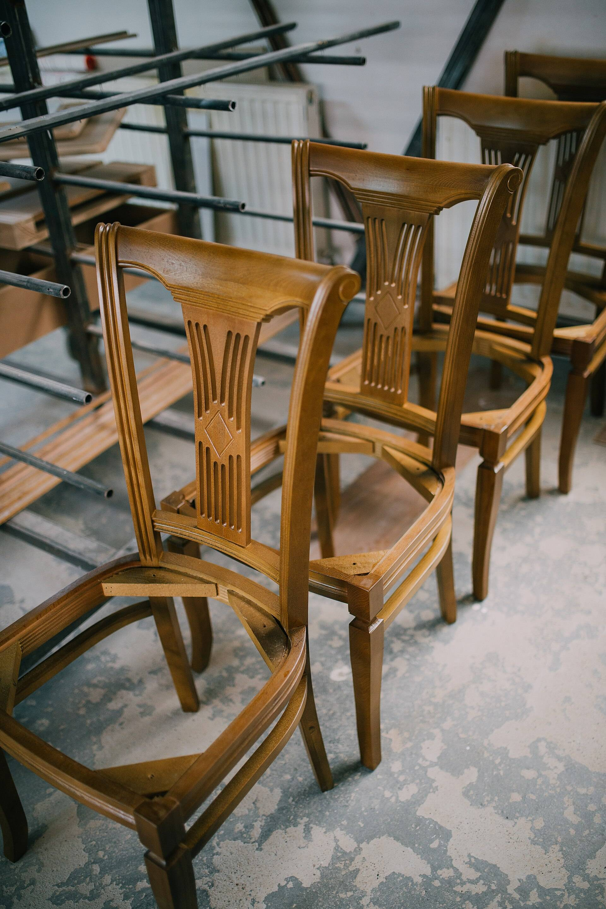

Margin Notes 是一本关于设计与设计背后之人的独立季刊。第 9 期把整本交给一个词。
第 9 期看点
试读标题，展示本期样貌。完整目录随刊刊出。
-
报道
让椅子继续被使用的作坊
长时间探访那些让家具重生的工台。

随笔
一道补痕，诉说物件本身
关于留存，以及它的代价。
访谈
修理工谈手上的学问
不用这个词的学徒制。
作品集
被手磨出形状的工具
平铺实拍，按实际尺寸。
札记
读者寄来的修补
小小修补，以及它们为何重要。
为留存而印
164 页非涂布纸，值得读上两遍。

预购第 9 期
| 期数 | 9，修复 |
|---|---|
| 页数 | 164 |
| 出刊日 | 10 月 3 日 |
| 定价 | 每册 £18 |